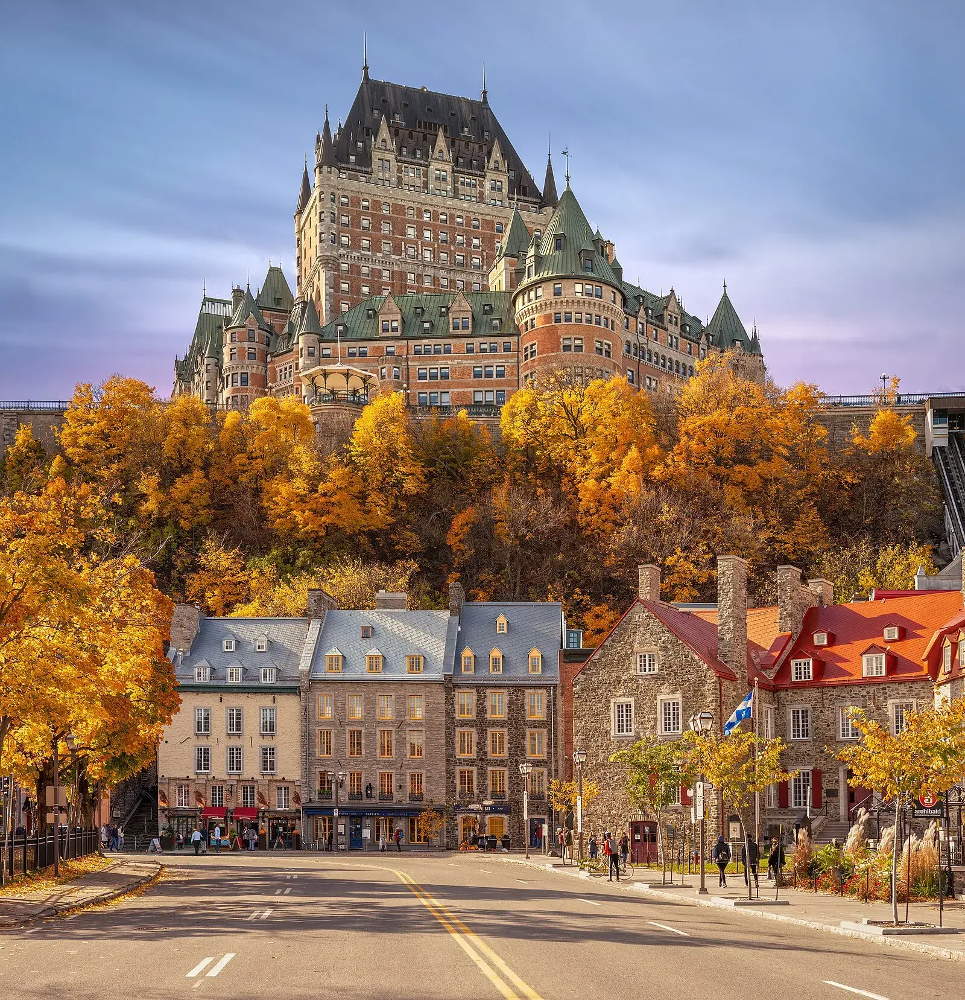
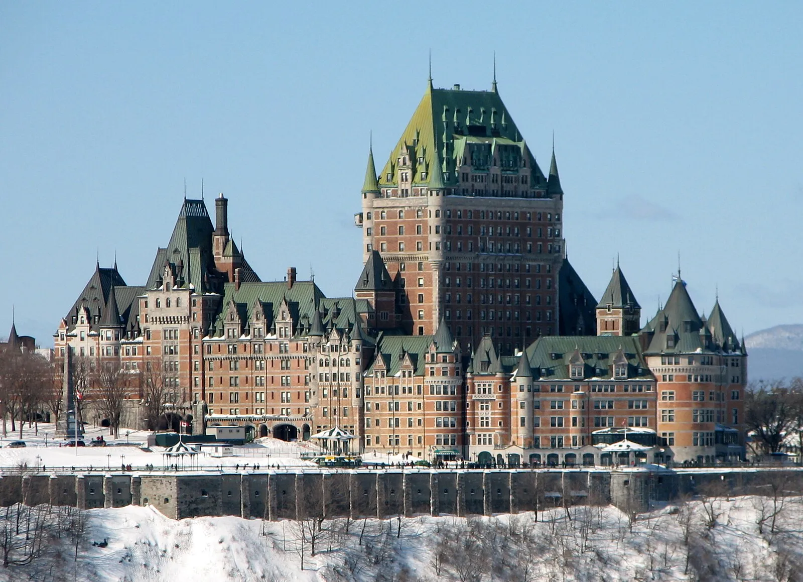
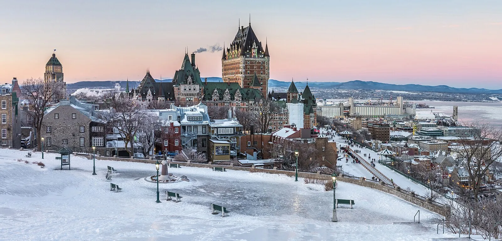
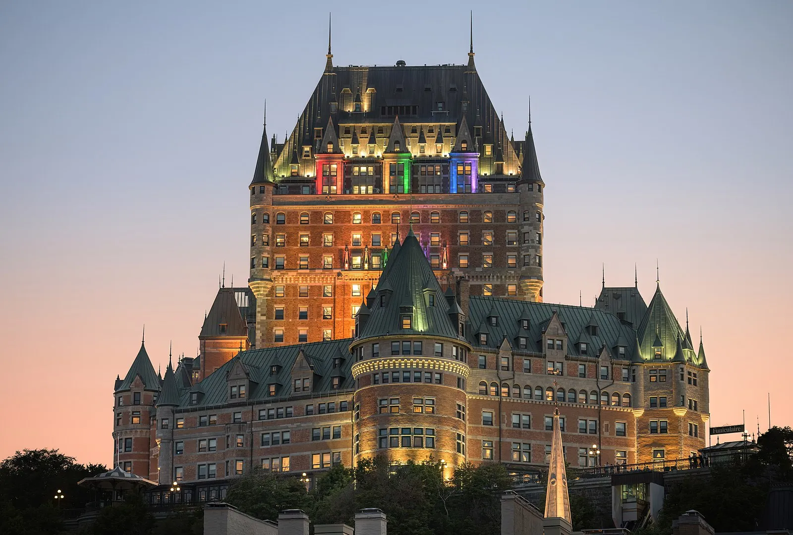
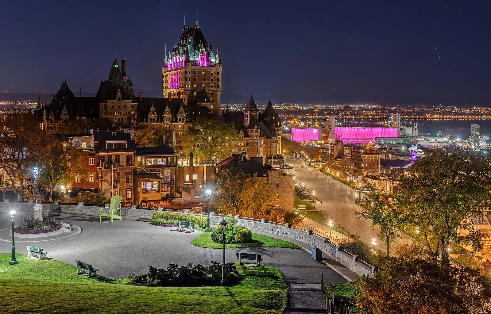
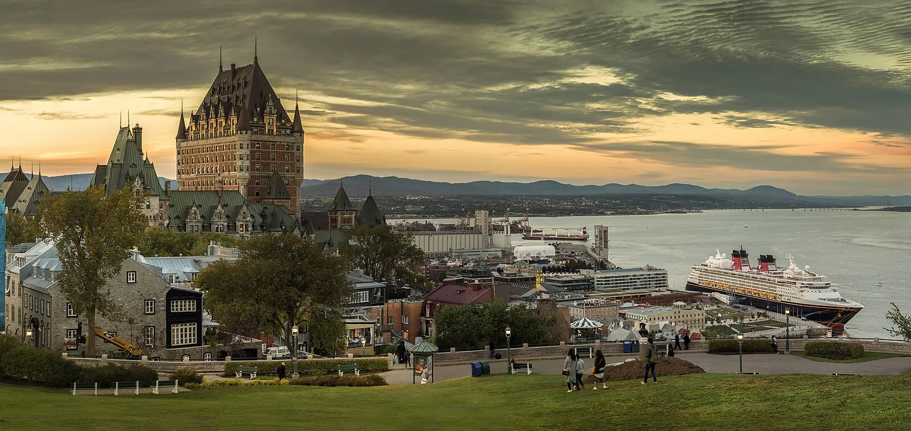
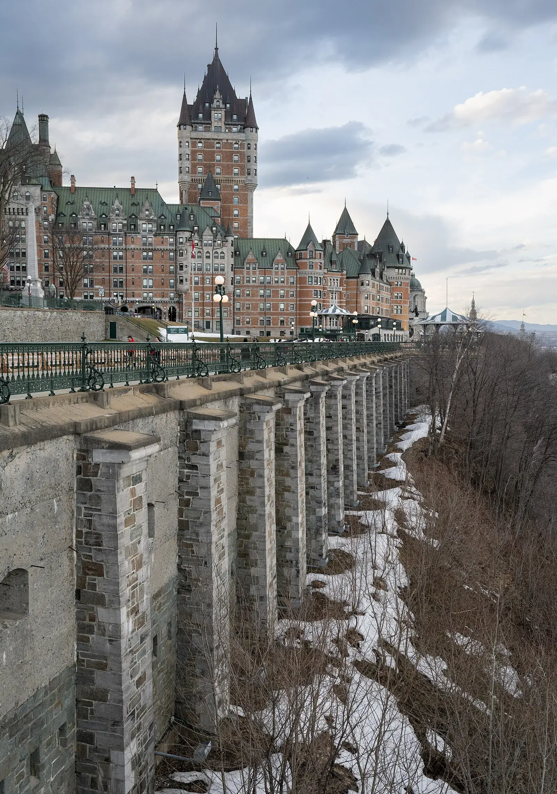

My Logbook: A French-Canadian Fairytale
I watched the Chateau Frontenac rise from behind the bow rail like a castle lifted straight out of a storybook, its copper turrets catching the first amber light of morning. We tied up right below the old city, so close that I could look straight up at those grand stone walls from the Basse-ville (Lower Town) funicular landing. The second I stepped off the ship the air smelled like wood smoke and warm maple, a scent so rich I could almost taste it — fall in Quebec City hits different from anywhere else I have ever been. Here is the thing that stopped me in my tracks: this is the only walled city in North America north of Mexico. 4.6 miles of fortifications, virtually all intact, circling a UNESCO World Heritage Site that has been standing since Samuel de Champlain founded Fort Saint Louis in 1608. We took the funicular up to the Haute-ville (Upper Town) and spent the whole morning wandering like kids in a storybook, my eyes darting from rooftop to cobblestone to painted mural.
The Chateau Frontenac dominates the skyline like something out of a Grimm Brothers tale — built in 1893 by the Canadian Pacific Railway, 661 rooms, and supposedly the most photographed hotel in the world. I believe it. Every angle is a postcard. I ducked into the lobby just to gawk at the wood-paneled grandeur (you do not have to be a guest — just walk in like you belong). From the Terrasse Dufferin boardwalk behind it, the St. Lawrence River spreads out below like molten silver, and I heard the distant echo of a ferry horn bouncing off the cliff face. My wife squeezed my hand and whispered that she felt like we had slipped through a crack in time.
Petit Champlain is impossibly charming — narrow cobblestone streets winding beneath stone archways, colorful murals climbing the walls, street musicians playing accordion on every corner, and shop windows full of ice wine and wool sweaters. We ducked into Au Petit Coin Breton for crepes that were still bubbling when they hit the table — ham, cheese, egg, perfectly crisp edges, the flavor so savory I closed my eyes and just savored it. Then we walked the fortifications at a leisurely pace, stopping every few minutes because another vista of the St. Lawrence turning gold with autumn leaves demanded a photo. I peeked into Notre-Dame-des-Victoires, the oldest Catholic church in North America, where light streamed through stained glass onto worn wooden pews that have held centuries of prayers. I whispered a quiet prayer of my own there, grateful for the beauty of a place that has endured so much history and still stands firm.
Afternoon was the Plains of Abraham — now a massive park with buskers and people tossing frisbees — but you can still feel the weight of the 1759 battle that shaped North America's future. I stood at the very spot where Wolfe and Montcalm clashed, and despite the children laughing nearby, the gravity of that history pressed against my chest. The wind carried the scent of freshly cut grass mixed with the sharp tang of autumn leaves, and I watched a single red maple leaf spiral down and land on my shoe. I picked it up and tucked it into my journal. Even so, the park felt peaceful rather than somber — a reminder that beauty and sorrow can share the same ground.
We ended the day with a self-guided food crawl: poutine at Chez Ashton (the cost was only $8 CAD, and the gravy was so rich it should require a license), tourtiere meat pie at Cochon Dingue for $14 CAD, and a beaver tail pastry dripping in cinnamon sugar for $6 CAD while watching the sun set behind the chateau. I also picked up a wedge of aged cheddar from a local fromagerie for $12 CAD — so sharp it made me wince, but in the best possible way.
Later that evening I took the funicular back up alone. Montmorency Falls was on my list for the next morning — 83 meters high, taller than Niagara — but tonight belonged to the city itself. The Chateau Frontenac was lit up like a fairy-tale castle, its reflection shimmering on the dark river below. Church bells rang somewhere across the water, and a light snow started to fall, each flake catching the lamplight before disappearing on my coat sleeve. My heart swelled. I felt tears prick the corners of my eyes — not from sadness but from the overwhelming sense that some places are gifts you do not earn. The cold nipped at my cheeks, but I did not want to move.
The pros: it feels like you have stepped into France without the jet lag, incredibly walkable for those with moderate mobility, and locals are genuinely warm once you try a little French. It is the closest you will get to a European city without crossing the Atlantic. The cons: however, the hills and cobblestones will destroy your calves and your shoes. Although the distances are short, the vertical climbs between Lower and Upper Town are not trivial for anyone with walking difficulty or wheelchair needs. Still, the funicular and accessible pathways along Terrasse Dufferin offer alternatives.
I learned something in Quebec City that I did not expect. Looking back, I realized that my favorite moments were not the grand vistas or the famous landmarks — although those were remarkable. They were the small ones: the sound of an accordion drifting around a stone corner, the warmth of a crepe in my hands on a cold morning, the way a stranger said "bonjour" with such sincerity that I felt welcomed into a story four centuries old. Sometimes the places that change you most are the ones that simply invite you to slow down and notice what matters.
The Cruise Port
Quebec City's cruise terminal sits at the foot of the old walled city along the St. Lawrence River, offering one of the most dramatic port arrivals in North America. Ships dock at the Ross Gaudreault Cruise Terminal (Pointe-à-Carcy), which features a modest but functional welcome center with restrooms, visitor information, and a small gift shop. The terminal is wheelchair accessible with ramp access to the main exit. From the pier, Upper Town and the Chateau Frontenac sit directly above you — visible the moment you step off the gangway. A taxi stand operates just outside the terminal gates, and the Old Port funicular ($4 CAD) is a five-minute walk along the waterfront. During peak season (May through October), the port can accommodate two large ships simultaneously, though tender operations are not required here — all vessels dock directly at the pier. Port fees are included in your cruise fare. Free Wi-Fi is available inside the terminal building.
Getting Around Quebec City
Everything worth seeing is inside the old city walls or a short ride away. Walking is the best way to explore Old Quebec — the entire UNESCO zone covers roughly one square mile, and the cobblestone streets are closed to most vehicle traffic. However, the terrain between Lower Town and Upper Town involves steep hills and staircases that can challenge visitors with mobility concerns. The Old Port funicular ($4 CAD one way) provides a quick, wheelchair accessible ride between the waterfront and Terrasse Dufferin at the top of the cliff.
The Ecolobus ($2 CAD) is a compact electric shuttle that loops through Old Quebec, hitting major stops including Place d'Armes, Petit Champlain, and the fortifications. It runs roughly every 10 minutes during cruise season and accepts exact change or transit cards. For longer trips — such as Montmorency Falls (15 minutes by car), Ile d'Orleans (20 minutes), or Ste-Anne-de-Beaupre (30 minutes) — taxis are plentiful at the terminal and cost roughly $25-$50 CAD each way depending on destination. Uber also operates in Quebec City and is generally $2-$5 cheaper than taxis for the same routes. Rental cars are available but unnecessary for a port day since parking in Old Quebec is scarce and expensive ($25-$35 CAD per day).
For visitors with walking difficulty, the funicular and Ecolobus combination covers most of the key sites without tackling the steep inclines on foot. Terrasse Dufferin itself is flat and paved, offering panoramic views without any climbing.
Quebec City Area Map
Interactive map showing cruise terminal and Quebec City attractions. Click any marker for details.
Top Excursions from Quebec City
Quebec City offers outstanding independent exploration options alongside ship excursion packages. If you book ahead through your cruise line, you get a guaranteed return to the ship — worth considering for anything outside the old city walls. For destinations within Old Quebec, going independent is easy and saves money.
Montmorency Falls: At 83 meters, these falls stand 30 meters taller than Niagara — and they are only 15 minutes from the cruise terminal. A cable car ($16 CAD round trip) carries you to the top, where a suspension bridge stretches directly over the cascade, the mist spraying your face as thousands of liters of water thunder below. For the adventurous, a staircase of 487 steps descends along the cliff face. Ship excursion packages run approximately $65-$85 USD per person; going independent by taxi costs roughly $25 CAD each way plus the cable car fee. In winter, frozen spray creates a massive ice cone called "pain de sucre" that ice climbers scale. This is moderate walking with some strenuous stair options — wheelchair accessible at the upper lookout via cable car.
Ile d'Orleans: Known as the "Garden Island," this pastoral retreat in the St. Lawrence sits 20 minutes from the city. Orchards, wineries, artisan cheese studios, and farm stands line the 67-kilometer loop road. Rent bikes ($30 CAD per day) or book ahead for a van tour ($55-$75 CAD per person). Stop for cider, aged cheddar, and fresh-picked berries in season. This is a low-energy, scenic outing perfect for anyone wanting a quiet counterpoint to the busy old city.
Ste-Anne-de-Beaupre Basilica: This stunning Catholic shrine dates to 1658 and draws pilgrims from around the world, famous for reported miraculous healings. The copper roof glows green against the Laurentian mountains, and the interior mosaics and stained glass are extraordinary. Worth combining with Montmorency Falls — both sit on the same route, and many ship excursion packages bundle them together for $90-$110 USD. Independent taxi cost is approximately $40-$50 CAD each way.
Old Quebec Walking Tour: Guide-led strolls through 400 years of French-Canadian heritage. The UNESCO World Heritage Site since 1985 covers the fortifications, Place Royale, Petit Champlain, and the Citadelle. Book ahead with local guides ($20-$35 CAD per person) for deeper stories than the ship excursion versions typically offer. This is moderate walking on uneven cobblestones — sturdy footwear recommended.
The Citadelle: An active military installation and the largest British fortress in North America. Guided tours ($18 CAD adults) run hourly and include the Changing of the Guard ceremony in summer. The star-shaped fortification sits atop Cap Diamant with commanding views of the river.
Depth Soundings Ashore
Practical tips before you step off the ship.
Quebec City rewards a little preparation. The cobblestone streets of Old Quebec look charming in photos, but they can be treacherous when wet with fall rain or early frost. Wear sturdy shoes with good grip — this is not the port for sandals or heels. The vertical climb between Lower Town and Upper Town is significant; even fit walkers feel it in their calves after a few round trips. Budget $4 CAD for the funicular if your knees or mobility need a break.
Language matters here more than most Canadian ports. Say "bonjour" first in every interaction — it is not just polite, it unlocks genuine warmth from locals who appreciate the effort. Most workers in the tourism zone speak English fluently, but that opening greeting in French changes the entire tone of every encounter. Currency is Canadian dollars; US dollars are sometimes accepted but at poor exchange rates. ATMs are widely available inside the old walls, and credit cards work almost everywhere. A basic poutine costs $8-$10 CAD, a sit-down lunch runs $15-$25 CAD, and a crepe from a street vendor is $7-$9 CAD.
Photo Gallery







Image Credits
All images on this page are sourced from Wikimedia Commons under Creative Commons licenses (CC BY-SA). Individual attributions appear in each figure caption throughout the page.
Frequently Asked Questions
Q: Where do cruise ships dock in Quebec City?
A: Ships dock at the Ross Gaudreault Cruise Terminal (Pointe-a-Carcy) at the base of the old walled city. The terminal is wheelchair accessible. Upper Town is a 10-minute steep walk or a 2-minute funicular ride ($4 CAD) from the pier.
Q: Is Quebec City worth visiting on a cruise?
A: Absolutely. It is the crown jewel of Canada and New England itineraries — the only walled city in North America north of Mexico, a UNESCO World Heritage Site since 1985, and the closest you will get to Europe without crossing the Atlantic.
Q: How long do you need in Old Quebec?
A: Five to six hours covers the highlights — Chateau Frontenac, Petit Champlain, the fortifications, and a food stop. However, you will wish you had overnight to see it all.
Q: What is the best time of year to visit Quebec City?
A: Peak cruise season (May through October) offers the most reliable weather. September and October bring spectacular fall foliage. Check the weather guide above for specific month recommendations based on your planned activities.
Q: Is Montmorency Falls worth the trip?
A: Yes. The falls are taller than Niagara, only 15 minutes from the pier, and the cable car ride ($16 CAD round trip) and suspension bridge are memorable experiences.
Q: What should I pack for Quebec City?
A: Sturdy walking shoes with good grip are essential for the cobblestones. Bring layers for variable temperatures, sunscreen, and a camera. A rain jacket is wise in any season.
Q: Will rain ruin my port day?
A: Brief showers are common but rarely last long enough to significantly impact your day. Have a backup plan for indoor attractions like the Chateau Frontenac lobby, Notre-Dame-des-Victoires church, or the Musee de la Civilisation.
Last reviewed: February 2026
Weather & Best Time to Visit
Key Facts
- Country
- Canada
- Region
- Atlantic
- Currency
- used in
- Language
- French / English